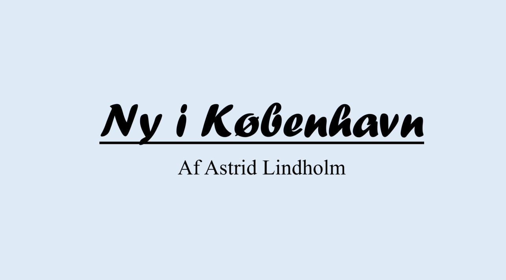

Tema 3: Grundlæggende UX/UI

I tema 3 har jeg fokuseret på de grundlæggende aspekter i User Experience (UX) og User Interface (UI). Dette har involveret en dybdegående forståelse af, hvordan brugere interagerer med digitale produkter, og hvordan man skaber brugergrænseflader, der er intuitive og engagerende.
Link til webpsite for tema 3-
Inden for tema 3 har jeg arbejdet med forskellige designdiscipliner, især inden for farveteknik. Ved udarbejdelsen af min hjemmeside, havde jeg fokus på monokrom farveharmoni og farvernes psykologi – særligt med henblik på farven blå, for at brugerne kan danne sig et indtryk af hjemmesiden, som jeg har haft indflydelse på. Da jeg udarbejdede designet til min hjemmeside, lavede jeg først et Moodboard og et Style Tile med det formål at skabe et mere konkret billede af mine i ideer.
-
I dette tema har jeg arbejdet med Sketching, Prototyping og Wireframing, og disse udgør de centrale værktøjer i designprocessen. Disse værktøjer har bidraget til at visualisere og konceptualisere mine ideer, før de blev implementeret i det endelige produkt. Sketching har været en kreativ proces, hvor jeg hurtigt og frit har haft mulighed for at skitsere nogle grundlæggende designideer, hvilket har givet mig mulighed for at udforske forskellige muligheder og løsninger, og dermed de løsninger der passede bedst ind i konceptet. Det gav mig mulighed for at afprøve forskellige koncepter og for at forme mine tanker visuelt. Også Prototyping har været et afgørende værktøj, for at skabe interaktive modeller af brugergrænseflader, hvilket har gjort det muligt for mig at teste og evaluere designet i en tidlig fase. Prototyper er i sin egenskab et godt redskab ved samarbejde og til at kommunikere viden rundt i udviklingsteamet. Slutteligt har jeg anvendt Wireframing, der har bidraget til at udvikle strukturerede og organisatoriske layouts af digitale grænseflader, hvor jeg har fokuseret på placeringen af elementer og navigation rundt på sitet. Wireframing har birdraget til at skabe en solid grundplan for det endelige design.

Jeg har i dette tema også fokuseret på at implementere mine designideer løbende under udviklingen af min hjemmeside. Jeg har særligt stræbt efter at skabe en brugervenlig oplevelse. Til at forbedre brugerinteraktionen introducerede jeg flere funktioner, der havde til hensigt at gøre det lettere for brugerne at navigere rundt på sitet. En af disse funktioner omfatter den situation, hvor en bruger bevæger musen henover en begivenhed (Child til sitet, der i dette tilfælde er Parent), hvorefter billedet bliver oplyst, og dermed skaber en visuel fremhævning af dette punkt, fremfor sitets øvrige elementer. Dette bidrog til en mere intuitiv og engagerende brugeroplevelse. En anden funktion, som jeg implementerede, er i den situation, hvor en besked bliver vist øverst på skærmen, når brugeren klikker på en bestemt begivenhed, hvori beskeden informerede brugeren om, at de nu var tilmeldt den ønskede begivenhed. Denne form for tilbagemelding øverst på skærmen gjorde det tydeligt for brugerne, at deres handling var blevet registreret, hvilket skabte en mere gennemsigtig proces. Disse funktioner blev indarbejdet med det formål at gøre hjemmesiden mere interaktiv og brugervenlig, hvilket bidrog til en positiv og engagerende brugeroplevelse.
-
Jeg har i dette tema rettet mit fokus mod at teste hjemmesiden, for at forbedre brugervenligheden og optimere hjemmesidens synlighed på diverse søgemaskiner som eksempelvis Google o. Lign. ved hjælp af SEO (søgemaskineoptimering). Jeg anvendte en praksisnær metode til planlægning, udførelse og formidling af brugertests. Dette inkluderede en strategisk brug af Tænke-Højt-Tests inklusive dokumentation med indsigt, 5-sekunders test og Lighthouse-test. Formålet med metoden var at indsamle værdifuld indsigt, identificere områder til forbedring og sikre en stærkere synlighed og performance på forskellige søgemaskiner. Målet var at optimere hjemmesidens position og tilgængelighed for brugerne.
- 
Jeg afsluttede dette temaet med en præsentation og en aflevering, hvori det samle tema blev behandlet. I præsentationen fremhævede jeg de væsentligste aspekter af min hjemmesideudvikling, og jeg valgte omhyggeligt de nøglepunkter, der udgjorde de bærende elementer i min arbejdsproces. Afleveringen udgjorde en samling af de opgaver, som jeg havde udført løbende i dette tema. Dette omfattede alle de centrale opgaver, jeg havde arbejdet med, lige fra designprincipper og brugergrænsefladeoptimering til implementering af hjemmesiden.